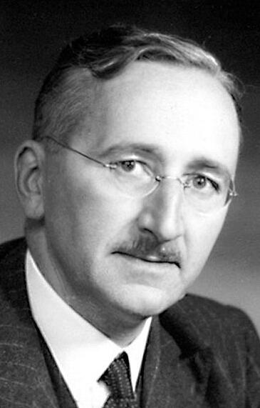
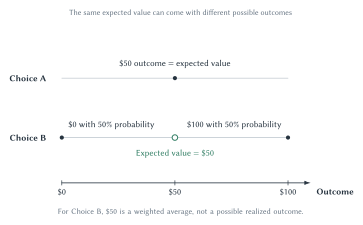

Chapter 12
Information, Uncertainty, and Market Design
Prices coordinate scattered knowledge, but hidden information and uncertain outcomes create problems that reputation, contracts, signals, screening, and carefully designed markets can help solve.

On January 28, 1986, the space shuttle Challenger broke apart shortly after launch. No one watching could yet know exactly what had failed. Four publicly traded companies had built major parts of the shuttle, and shares in all four began to fall.
The market did not remain equally suspicious of all four. By the end of the day, the other three stocks had recovered most of their losses. Shares in Morton Thiokol, the maker of the solid rocket boosters, closed about 12 percent lower. Within an hour, traders seemed to have singled out the company whose component would later become the focus of the official investigation.1
Clemson economists Michael Maloney and J. Harold Mulherin later reconstructed the trading. Some traders clearly became more suspicious of Thiokol and acted on those suspicions. Other traders responded to the resulting orders and price changes. Yet the researchers could not find one decisive public report that explained the result. Nor could they find large profits showing that a few well-informed insiders had simply supplied the answer.
A stock price is not a verdict about legal guilt. The decline meant that traders expected Thiokol to bear unusually large financial consequences because its component appeared likely to be involved. The remarkable part is that this information appeared in the price even though the researchers could not identify exactly whose knowledge or reasoning put it there.
The market had not solved the engineering problem, and its first reaction was not perfect. But the episode raises a powerful question: How can the actions of many people, each holding only a piece of the relevant knowledge, produce information that no one person appears to possess?
That question is central to Friedrich Hayek’s “The Use of Knowledge in Society.” The knowledge needed for economic coordination is not sitting in one office, ready to be collected and entered into a master plan. It is scattered among millions of people, much of it local, changing, and known only through experience. Prices help those people adjust their plans to one another without requiring everyone to know everything.2
But prices do not reveal everything. A buyer may not know whether a used car has been carefully maintained. An insurance company may not know how carefully a customer will behave after receiving coverage. An employer may not know an applicant’s ability or effort. A restaurant owner may not know whether a manager is protecting quality when the owner is away. Traders in a prediction market may disagree not only about an event but also about what the contract’s wording means.
The future adds another problem. Even when everyone has the same information, an outcome may still be risky or deeply uncertain. A person must decide without knowing exactly what will happen.
This chapter connects these problems. First, it explains how prices make use of scattered knowledge. Then it develops simple tools for thinking about uncertain outcomes. It next examines what happens when one side knows more than another, and how institutions such as warranties, reputation, monitoring, signals, tests, and market rules can make exchange possible.
The broad lesson is not that information problems make markets useless. It is that information is costly, and workable markets need rules and institutions that help people discover, reveal, verify, or act on what others do not know.
Prices And Scattered Knowledge
The Challenger case is dramatic. Hayek’s everyday example was simpler. Imagine that a metal used in cars, appliances, and electronics suddenly becomes harder to obtain. Perhaps a mine closes. Perhaps a new technology creates an unexpected use for it. Perhaps transportation is disrupted.
Most people who use products containing the metal will never learn exactly what happened. Yet they still respond. Producers bid more for the limited supply, the price rises, and thousands of buyers begin economizing. Engineers search for substitutes. Manufacturers redesign products. Recyclers look harder for scrap. Suppliers elsewhere have a stronger reason to expand production.
No one sent every participant a complete report. The higher price gave each person a reason to use what that person knew: which substitute might work, which purchase could wait, which production method could change, or where another source might be found.
Earlier chapters described prices as signals. A shortage pushes a price upward, encouraging buyers to economize and sellers to supply more. Hayek asked us to look one step deeper: Where does the information behind those adjustments come from?
A central decision-maker could collect reports about inventories, production costs, and planned purchases. But the most useful knowledge is often more detailed and more changeable than a report can capture. A machine operator knows which tool is wearing out. A local buyer knows that a project can be delayed. A store manager sees a sudden change in neighborhood demand. An entrepreneur notices an alternative use for an overlooked material. Much of this knowledge is discovered only while people act.
When these people buy and sell, their separate knowledge affects their bids and offers. The resulting price does not explain the full story. It condenses part of that story into a signal people can use. A manufacturer does not need to know whether copper became scarcer because of a mine closure or more valuable because of a new product. A higher copper price gives the manufacturer a reason to conserve copper either way.
Prices therefore save on information. They allow people to coordinate without first agreeing on one complete account of the world.
A price does not have to explain what happened. It only has to give people a reason to change their plans and use the knowledge they already possess.
Historical Note
Friedrich Hayek And The Knowledge Problem
Hayek did not claim that a price tells everyone everything. His point was that the economic problem is not merely how to allocate a known pile of resources among a known list of uses. The list itself keeps changing. People continually discover new needs, costs, substitutes, and opportunities.
A price change lets people react to those discoveries without requiring one authority to collect every detail first. That is why decentralized coordination can use knowledge that no single person possesses in full.
The chapter-opening Hayek portrait is used under a Creative Commons license.3
Central Planning Has Two Problems
Communist central planning is often criticized for weak incentives. A factory manager who does not gain from satisfying customers or bear the full cost of waste may have little reason to improve. That is an incentive problem.
Hayek identified a separate problem. Even a completely honest and public-spirited planner would not automatically know every local cost, substitute, preference, delay, and production possibility. Good intentions do not place scattered knowledge into the planner’s hands. That is an information problem.
Solving one does not solve the other. Giving a planner stronger incentives does not provide knowledge that has not been collected or perhaps has not yet been discovered. Giving the planner better reports does not ensure that the planner will use them well.
Key Point
Incentives And Information Are Different Problems
Incentives concern what people gain or lose from their choices. Information concerns what they know and can discover. A system can perform poorly because of either problem, and fixing one does not automatically fix the other.
Markets do not make either problem disappear. Prices can omit costs imposed on outsiders, as Chapter 10 showed. Market power can distort prices. Public goods may have no ordinary price. Buyers and sellers may hide information from one another. The point is not that every market price is perfect. The point is that any proposed alternative must also explain how people will discover and communicate the knowledge needed to coordinate their decisions.
Hayek’s knowledge problem concerns information scattered among many people. The next problem is different. Sometimes everyone faces an outcome that is not yet known.
Risk, Uncertainty, And Expected Value
You can make a careful choice and still receive a bad outcome. You can also make a foolish choice and get lucky. Economic reasoning requires separating the quality of a decision from the one result that happened to follow it.
Begin with a situation in which the possible outcomes and their probabilities can be estimated. Economists call this risk. A fair coin has known probabilities. An insurer may estimate accident rates from a large amount of past experience. A restaurant may estimate the chance of a slow lunch from years of sales data.
Frank Knight used uncertainty for a harder situation in which the relevant probabilities themselves are difficult to know.4 A new technology, an unprecedented political crisis, or the launch of a product unlike anything sold before may not provide a stable history from which to estimate probabilities. Modern economists do not always use the two words this rigidly, but Knight’s distinction is useful: sometimes we do not know what will happen, and sometimes we do not even know how confident to be about the possible outcomes.
Expected Value Is A Weighted Average
When probabilities can be estimated, expected value gives us a starting point. Multiply each possible outcome by its probability, then add the results:
\[ EV = \sum_i p_i x_i \]
The equation says something simple. Give each outcome the weight represented by its chance of occurring, then add the weighted outcomes.
Consider three choices:
| Choice | Possible Outcomes | Probabilities | Expected Value | Risk Comparison |
|---|---|---|---|---|
| A | $50 | 100 percent | $50 | Certain outcome |
| B | $100 or $0 | 50 percent each | $50 | Same expected value as A, but risky |
| C | $120 or $0 | 50 percent each | $60 | Higher expected value than A, but risky |
Table 12.1. Expected value and risk answer different questions. Expected value summarizes the probability-weighted average. It does not show how widely the possible outcomes are spread.
Choice A is certain:
\[ EV_A = 1.00(\$50) = \$50. \]
Choice B has two equally likely outcomes:
\[ EV_B = 0.50(\$100) + 0.50(\$0) = \$50. \]
Choice C also has two equally likely outcomes:
\[ EV_C = 0.50(\$120) + 0.50(\$0) = \$60. \]
Choices A and B have the same expected value, but they are not the same choice. Choice A always pays $50. Choice B never pays $50; it pays either $100 or nothing. Figure 12.1 makes that difference visible.

Figure 12.1. The same expected value can come with different risk. Both choices have an expected value of $50, but only Choice B has risky outcomes. The expected value is the center of Choice B’s possible outcomes, not an amount Choice B can actually pay.
Quick Concept
Expected Value Is Not A Prediction Of What Must Happen
Expected value is a probability-weighted average across repeated comparable situations. It may be an outcome that never occurs in any one case. A single result above or below the expected value does not by itself show that the calculation was wrong.
Risk Preferences
A risk-neutral person chooses among money outcomes according to expected value. If everything else is equal, that person prefers Choice C because $60 exceeds $50 and is indifferent between A and B.
A risk-averse person places extra value on avoiding a serious downside. That person may prefer the sure $50 to Choice B even though their expected values are equal. A sufficiently risk-averse person might even prefer the sure $50 to Choice C, despite Choice C’s higher expected value.
That choice is not necessarily irrational. Stakes matter. A person may reasonably turn down a gamble with an attractive average payoff if losing would mean missing rent, losing a home, or being unable to pay for medical care. Risk concerns the possible outcomes and their downside, not a failure to choose the highest expected value.
A risk-seeking person prefers a gamble to a certain amount with the same expected value. Lotteries make such preferences visible, although entertainment and hope can also be part of what the buyer purchases.
Why People Buy Insurance
Insurance connects expected value to an institution. Suppose there is a 1 percent chance of a $10,000 loss. The expected loss is:
\[ 0.01(\$10{,}000) = \$100. \]
A risk-averse person may willingly pay a premium greater than $100 to replace the small chance of a devastating loss with a certain, manageable payment. The difference can cover the insurer’s operating costs and the value the customer places on reducing risk.
Insurance does not make the loss disappear. It pools many risks and transfers money toward the people who experience losses. It also changes incentives and information. Those changes lead to the next two sections.
Signals, Screening, And College
A peacock’s tail is costly to grow and carry. That cost helps explain why the display can convey information. If an unhealthy bird cannot imitate the display as easily as a healthy bird, the visible trait can reveal otherwise hidden quality.12
The economic logic is a signal. The better-informed side takes an observable action that helps another party infer something hidden. A signal can be credible when it is more difficult or costly for a low-quality type to imitate than for a high-quality type.
Costly does not mean useless. A training program may both increase skill and reveal persistence. A warranty may both protect the buyer and signal that the seller expects the product to last. The key question is why the observed action tells the receiver something that a cheap promise would not.
Signaling Versus Screening
Michael Spence applied signaling to education and labor markets.13 A worker knows more than an employer about personal ability, persistence, and preparation. Completing a demanding program may reveal some of those traits if people with the traits can complete it more easily or successfully.
The less-informed side can also take the initiative. An employer can require a work sample, test, interview task, or probationary period. This is screening: the less-informed side designs a choice or requirement that helps reveal differences among participants.14
| Process | Who Starts It? | Example | Hidden Information Addressed |
|---|---|---|---|
| Signaling | The better-informed worker | Earns a credential or completes a demanding program. | Ability, persistence, reliability, or preparation. |
| Screening | The less-informed employer | Requires a work sample, test, or probationary period. | Differences among applicants that an ordinary application does not reveal. |
Table 12.2. Signaling and screening differ in who takes the initiative. The informed side sends a signal; the less-informed side creates a screen. A real hiring process can contain both.
No signal or screen measures every valuable trait. A difficult exam may reveal preparation but miss creativity or teamwork. A degree may reveal persistence while saying little about a specific job skill. Employers compare the information gained with the cost of collecting it.
What Are Students Buying When They Attend College?
College students have a direct stake in this debate. Graduates generally earn more than otherwise similar people with less schooling, but that wage difference does not tell us why.
There are at least three channels:
| Channel | Economic Logic | What Higher Wages Alone Cannot Tell Us |
|---|---|---|
| Human capital | Coursework and practice increase knowledge, skills, and productivity. | How much productivity college actually created. |
| Signaling | Admission, grades, persistence, and completion reveal traits employers cannot directly observe. | How much employers are paying for information about traits students already had. |
| Consumption | Students value learning, friendships, activities, independence, status, or campus life while attending. | This value may matter even when it does not raise later earnings. |
Table 12.3. College can create skills, reveal traits, and provide value while students attend. The three channels can operate at the same time.
The human-capital explanation says students become more productive by learning to write, calculate, communicate, solve problems, and use specialized tools. The signaling explanation says employers use admission, grades, and degree completion as evidence about traits that are difficult to observe directly. The consumption explanation says part of college’s value is enjoyed while attending, much like the value of travel, sports, friendships, independence, or learning for its own sake.
Evidence supports meaningful roles for both human capital and signaling. A sharp wage increase at degree completion, sometimes called a sheepskin effect, is consistent with credentials carrying information. Employers also appear to rely less on schooling as they observe a worker’s actual performance, which is consistent with employer learning.15
But signaling is not the whole story. Research on curriculum changes finds that reducing required coursework while preserving the identity of a degree can reduce later earnings. A recent study using Norwegian schooling reforms estimated that productivity explained most of the private return in that setting, with a smaller but meaningful signaling share.16 These estimates come from particular places and policies; they are not universal percentages for every college or major.
Consumption value is separate from both wage explanations. Students may value college even when a particular experience does not raise future pay. Research using detailed student choices finds substantial consumption value on average and large differences across students.17
The honest answer is therefore less dramatic than “college is all skill” or “college is all signaling.” Students buy a bundle. The proportions differ across programs, courses, students, and employers.
The distinction matters beyond the individual student. If college raises productivity, higher pay reflects more valuable output. If a degree mainly signals traits the student already had, it can still raise that student’s pay by moving the student ahead in the hiring line without increasing total output by as much. A private return and a social return need not be the same.
Sideline
When A Private Pledge Replaces A Legal Remedy
American common law once allowed a person to sue over a broken promise to marry. Beginning in the 1930s, many states abolished or restricted these actions. Margaret Brinig argues that the increasingly valuable diamond engagement ring may have served partly as a private pledge after legal enforcement weakened.18
The ring placed wealth at risk if the promise failed. That is an example of private ordering: people can sometimes create a bond or pledge when courts will not enforce a promise in the old way.
This is a qualified historical argument, not a claim that legal change invented engagement rings. Rings existed earlier, state laws changed at different times, and advertising, income, prices, and social customs also mattered.
Signals, screens, warranties, and reputation all respond to information that is hidden from one side. The chapter’s final case returns to Hayek’s broader problem: Can a market be designed specifically to collect beliefs scattered across many people?
Prediction Markets And Market Design
A prediction market creates a contract whose payoff depends on whether a stated event occurs. Suppose a contract pays $1 if a specified candidate wins an election and $0 otherwise. Traders who think the event is more likely buy at lower prices. Traders who think it is less likely sell at higher prices.
Under suitable conditions, a price of $0.65 can be read roughly as a 65 percent market estimate. The price gives people with information or strong analysis a reason to trade. Their separate beliefs enter one public number.19
This brings the chapter back to Hayek. A prediction-market price can collect pieces of information that no one participant possesses in full. Someone with useful knowledge has a chance to profit by trading on it, and the trade moves the public price.
Can Someone Rig The Market?
Prediction markets do have weaknesses. A trader may buy or sell simply to push the displayed price. That attempt can attract informed traders who profit by taking the other side, although correction may be weak in a thin market.20
A harder problem appears when someone can change the event or the measurement used to settle the contract. Trading cannot undo a participant’s power to alter the result. The Paris hairdryer story makes the distinction difficult to forget.
Sideline
Did A Hairdryer Change The Weather In Paris?
In April 2026, a Météo-France sensor at Charles de Gaulle Airport recorded two abrupt and highly unusual temperature spikes. Polymarket contracts on the daily high temperature in Paris were settled using that sensor, and traders who had placed unlikely bets made large profits. One reported wager of $119 produced more than $21,000 in profit.21
Météo-France filed a complaint, and French police investigated possible tampering. Online observers proposed a lighter or a battery-powered hairdryer as the heat source. The hairdryer was never established as fact, and a widely shared image of a person aiming one at the sensor was AI-generated.
The economic lesson does not depend on identifying the appliance. A market intended to predict Paris weather relied on one physical sensor for settlement. If someone could alter that reading, the person would not merely be forecasting the outcome but helping create the recorded outcome. Polymarket later switched the Paris contracts to a different airport sensor.
This is why market design matters. A prediction market needs a clearly worded contract, a trustworthy source for deciding what happened, enough trading for informed participants to challenge a bad price, and rules limiting traders who can directly control the outcome. Those details determine whether the price is an informative forecast or merely a precise-looking number.
Key Point
A Prediction Is Only As Clear As The Contract Behind It
Prediction markets can combine scattered beliefs in the Hayekian sense. But the price refers to a particular contract, data source, and settlement rule. Those institutions determine what the market is actually predicting.
The same lesson applies beyond prediction markets. Online ratings depend on identity and review rules. Hiring depends on credentials, tests, and probation. Insurance depends on deductibles, monitoring, and enrollment rules. Franchising depends on how contracts divide control and profit. Institutions do not sit outside the market. They help determine what participants know, what they reveal, and how they behave.
The Big Picture
This chapter began with a market appearing to know something no individual could fully explain. Hayek’s raw-material example then showed the same process in an ordinary market: a higher price helps people adjust by using knowledge held in different places. Markets coordinate partly because prices give people reasons to discover and act on information.
But information problems take several forms:
- Scattered knowledge: different people know different local facts, and prices help coordinate their plans.
- Risk and uncertainty: the outcome is unknown, and sometimes even the probabilities are difficult to estimate.
- Adverse selection: hidden characteristics affect who enters or what is offered before an agreement.
- Moral hazard: hidden actions change after an agreement changes who bears the cost.
- Principal-agent problems: delegation creates gains from specialization but also hidden action and conflicting goals.
- Signaling and screening: participants take costly or revealing actions to reduce hidden-information problems.
- Market design: rules shape what information is produced, how it enters prices, and whether promises can be trusted.
No response produces perfect information for free. Monitoring can be costly. Ratings can be manipulated. Signals can waste resources or measure the wrong trait. Incentive pay can redirect effort. Warranties can be hard to enforce. Market rules can be vague or captured.
That is why the economic question is rarely “Does this arrangement have a flaw?” Every arrangement does. The useful question is: Which realistic arrangement helps people coordinate better, given the information and incentive problems they actually face?
Study And Learn
Chapter Study Map
Core Ideas
- Prices help people use scattered knowledge without requiring everyone to know the complete story.
- Incentive problems and information problems are different.
- Expected value is a probability-weighted average, not a guaranteed outcome.
- Risk concerns possible outcomes with estimable probabilities; Knightian uncertainty concerns probabilities that are difficult to know.
- Adverse selection concerns hidden characteristics before an agreement.
- Moral hazard concerns hidden actions after an agreement.
- A principal-agent problem combines delegation, differing goals, and costly observation.
- Signaling begins with the informed side; screening begins with the less-informed side.
- Market rules affect the information a price contains.
Figures And Tables
- Table 12.1: calculate expected value while keeping every possible outcome visible.
- Figure 12.1: choices can have the same expected value and different risk.
- Figure 12.2: hidden quality can lower offers and change which sellers remain in a market.
- Table 12.2: identify who initiates a signal or screen.
- Table 12.3: separate the skill, signaling, and consumption value of college.
Reasoning Tasks
- List outcomes and probabilities before calculating expected value.
- Compare expected value with downside and spread rather than treating them as the same question.
- Identify who knows what and whether the information is hidden before or after an agreement.
- Explain how an inspection, warranty, reputation, deductible, test, or contract changes incentives or information.
- Identify the principal, agent, delegated decision, hidden action, and measurement problem.
- Ask why a signal is harder for one type to imitate.
- Diagnose the kind of prediction-market manipulation before recommending a rule.
Common Mistakes
- Treating expected value as the most likely or guaranteed outcome.
- Calling a lower-expected-value choice irrational without considering downside and risk aversion.
- Using adverse selection and moral hazard as interchangeable names.
- Thinking moral hazard means immoral behavior.
- Assuming more monitoring automatically solves an agency problem.
- Treating the monitor as costless and neutral.
- Assuming that a costly signal must be useless.
- Claiming that higher graduate wages prove either pure human capital or pure signaling.
- Treating any prediction-market trade that moves price as successful manipulation.
Looking Ahead
Chapter 13 carries the restaurant into production and cost. Chapter 16 returns to brands, advertising, and quality promises. Chapter 18 applies signaling and screening to labor markets. Chapter 19 applies adverse selection and moral hazard to health insurance. Chapter 20 returns to franchising, ownership, and platform rules.
Review Questions
- What is Hayek’s knowledge problem?
- How can a price help people coordinate without telling them the complete story behind a market change?
- What is the difference between the incentive problem and the information problem of central planning?
- Why does the knowledge problem not imply that every market price is correct?
- In Knight’s distinction, how does risk differ from uncertainty?
- What is expected value, and how is it calculated?
- Why is expected value not necessarily an outcome that can occur?
- How do risk neutrality and risk aversion differ?
- Why might a rational person choose a sure $50 over a risky choice with an expected value of $60?
- How does insurance help a risk-averse person?
- What is asymmetric information?
- What is adverse selection?
- Explain each step in the adverse-selection cycle for used cars.
- How can warranties, inspections, certification, or reputation weaken the lemons problem?
- Why does the survival of the used-car market not disprove Akerlof’s logic?
- What is moral hazard, and why is the term easy to misunderstand?
- How do deductibles respond to moral hazard?
- What makes a relationship a principal-agent problem?
- Why can strong incentives tied to one measure reduce performance on other tasks?
- What is a residual claimant, and how can franchising change a local operator’s incentives?
- Why does monitoring create the question “Who monitors the monitor?”
- What makes a costly signal credible?
- How does signaling differ from screening?
- What are the human-capital, signaling, and consumption channels of college value?
- Why can the college wage premium not tell us how much each channel matters?
- How can a prediction market collect scattered information?
- What does the Paris airport temperature case teach about the source used to settle a prediction contract?
- Why do contract wording and settlement rules affect what a prediction-market price means?
Economic Reasoning Questions
- A storm damages a major coffee-growing region and coffee prices rise. Explain how a cafe owner, a tea producer, and a farmer elsewhere might respond without knowing the same facts.
- A planner receives accurate reports about last month’s production. Explain why the planner may still face a knowledge problem this month.
- A choice pays $200 with probability 0.25 and $0 with probability 0.75. Calculate its expected value. Is the expected value a possible payoff?
- Compare a sure $45 with the gamble in Question 3. What would a risk-neutral person choose? Why might a risk-averse person choose differently?
- A new business has no close historical comparison. Explain why assigning probabilities may involve uncertainty rather than ordinary risk.
- A buyer offers the same price for every used laptop because battery quality cannot be observed. Explain how the offer could change which owners are willing to sell.
- A seller provides a transferable three-year warranty. Explain how the warranty both protects the buyer and may signal quality.
- An insurer cannot observe whether policyholders install smoke detectors. Is the resulting problem adverse selection or moral hazard? Explain the timing.
- A restaurant pays managers only for reducing labor cost. Predict one desirable response and one unintended response.
- Identify the principal, agent, hidden action, and possible measurement problem when a university hires an outside company to operate a dining hall.
- A company hires a second auditor to check the first auditor. Explain how this may help and why it does not end the agency problem.
- A job applicant earns a difficult certification. Identify the hidden trait, the signal, and the employer’s reason for taking it seriously.
- An employer requires applicants to complete a work sample. Explain why this is screening rather than signaling.
- Give one example of a college activity that could create human capital, signal a trait, and provide consumption value at the same time.
- A trader buys contracts only to push a displayed probability upward. Explain why other traders might correct the price and give one reason they might fail.
- Use the Paris airport case to explain why a prediction market needs a trustworthy way to determine what actually happened.